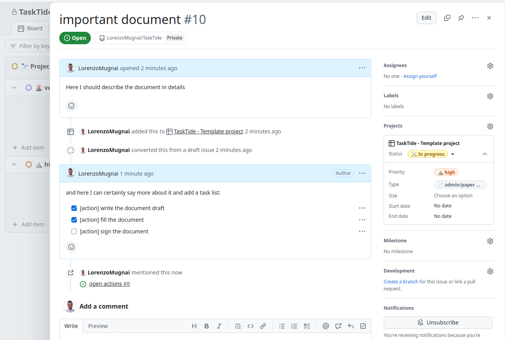
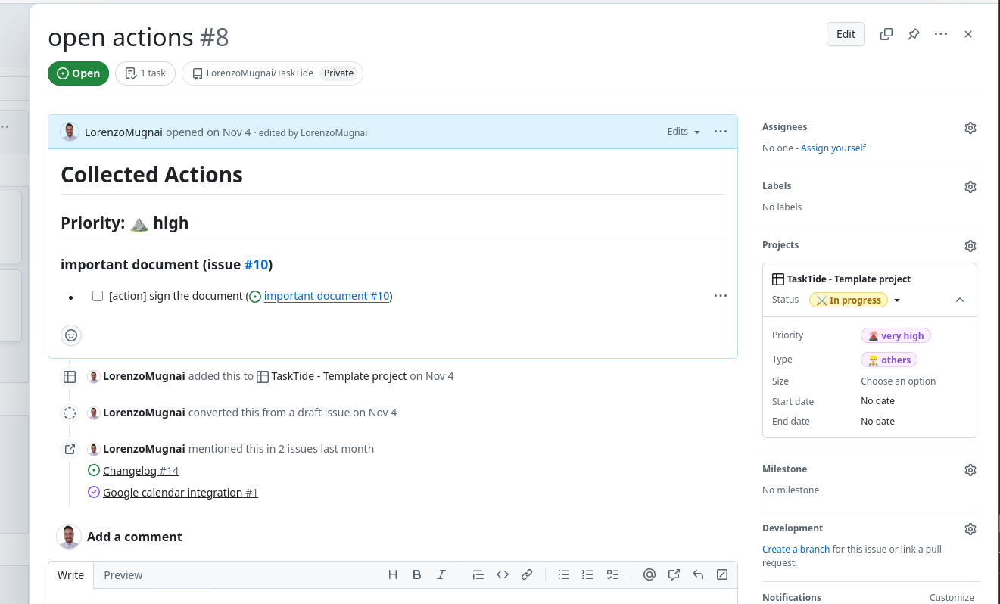
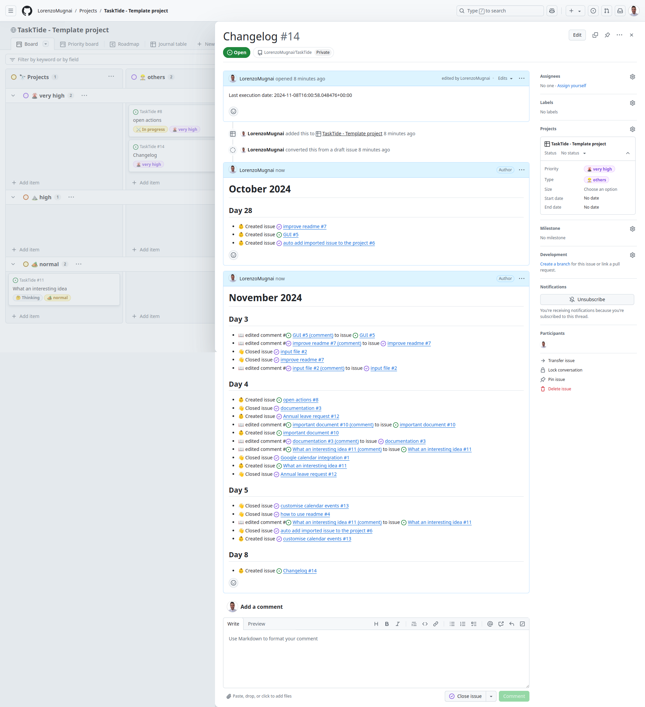
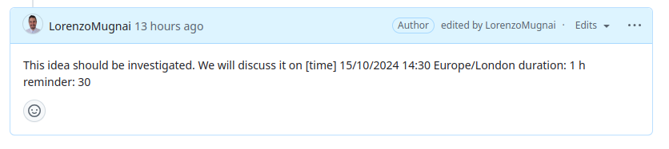

Explore TaskTide Functionalities#
TaskTide provides a variety of functionalities to help you manage your tasks effectively. This section will guide you through the key features of TaskTide, focusing on action collection and synchronization of assigned issues.
Collecting Actions in the Open Actions Issue#
One of the primary functions of TaskTide is to collect all actions in the designated Open Actions issue. This process is facilitated by the workflow named Collect Actions on Issue Events, which activates whenever a new issue or comment is created.
This workflow scans for all open tasks marked with the keyword “action” in the following format:
- [ ] [action]
Example: If you have an issue entitled as My project with the following content:
- [ ] [action] Write the project proposal
- [ ] Review the design documents
- [ ] [action] Schedule a team meeting
The workflow will identify only the lines starting with - [ ] [action] as an action item and will collect these actions into the Open Actions issue.
My project
-----------
- [ ] [action] Write the project proposal
- [ ] [action] Schedule a team meeting
By marking it as done (using - [x]), the Open Actions issue will automatically reflect this change and remove the completed action.
- [x] [action] Write the project proposal
- [ ] Review the design documents
- [ ] [action] Schedule a team
That will now reads:
My project
-----------
- [ ] [action] Schedule a team meeting
This synchronization also works in reverse: marking an item as completed in the Open Actions issue will automatically update the original issue or comment.
Note
The Synchronization is not real-time. The action running time is average 1 minute, so it can take up to 1 minute to see the changes in the collecting issue.
Here is an example of action list from the project template:

and the collected actions in the Open Actions issue:

This workflow runs automatically on every issue event (like creating a new issue or a comment) and is also scheduled to execute every Sunday at midnight.
Automatic changelog#
TaskTide also includes a feature for automatically generating a changelog based on the issues opened, edited and closed in your repository. This functionality is based on the workflow named Update Changelog, which is scheduled to run every day at midnight.
An example of a changelog generated by TaskTide is shown below:

It provides a comprehensive overview of the project’s progress and serves as a valuable reference for tracking changes over time.
How to reset your changelog#
The changelog updater may change between different TaskTide updates. To ensure consistency, if you notice something weird on the changelog, please follow the following steps to reset your changelog:
Open you changelog issue.
Edit the issue body to remove the last update date. Empty the body and save.
Delete every comment in the body. Don’t worry, they will be make anew, but for now, delete your monthly changelog.
Open your repository and go to the Actions` tab.
Run the Update Changelog workflow manually. To do so, select the Update Changelog` workflow and click the Run workflow` button.
This will create a new updated changelog, starting from the first issue in the repository.
Collecting Assigned Issues from Source Repositories#
TaskTide also includes functionality for collecting issues assigned to USER_NAME from the repositories listed in SOURCE_REPOS. This feature is based on the workflow named Sync Assigned Issues from Other Repositories, which is scheduled to run every Sunday at midnight.
During its execution, this workflow imports assigned issues into your repository and marks them as “imported.”
Note
Please note that imported issues do not automatically appear in your project. They will be copied as new issues in your repository, and you can then manually add them to your project board.
Warning
Please note that these imported issues are copies of the original issues and do not represent true synchronization. Any changes made to the original issues in the source repositories will not reflect in the imported copies.
Adding Events to Google Calendar#
TaskTide allows you to add events to Google Calendar by including deadlines in your issues or comments. To write an event, use the following format:
[time] dd/mm/yyyy HH:MM Timezone
Example:

[time] 15/10/2024 14:30 Europe/London
This format will be detected by the TaskTide script and converted into a calendar event. Each event created will include the entire text of the issue or comment in which the deadline is mentioned, providing full context. Additionally, the event will contain a clickable link back to the original comment or issue on GitHub, allowing you to easily access more details or any related discussions.
For a detailed, step-by-step guide on writing deadlines and how the script processes them, refer to How to Write Dates in GitHub Issues for Google Calendar Integration.
Manually Running Workflows#
In addition to automatic executions, you can run these workflows manually whenever needed:
To manually trigger the action collection workflow: - Go to the Actions tab in your GitHub repository. - Select the Collect Actions on Issue Events workflow. - Click the Run workflow button.
To manually trigger the assigned issues synchronization workflow: - Go to the Actions tab in your GitHub repository. - Select the Sync Assigned Issues from Other Repositories workflow. - Click the Run workflow button.
By following these steps, you can ensure that your TaskTide functionalities are utilized to their fullest potential, allowing for efficient task management and organization.